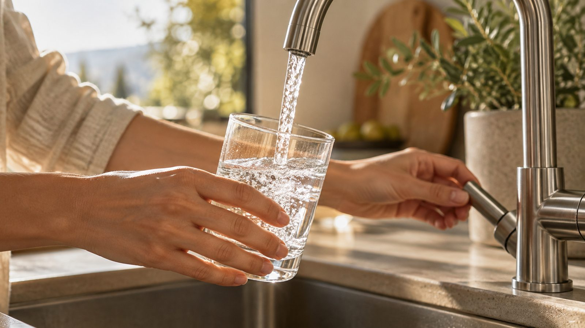
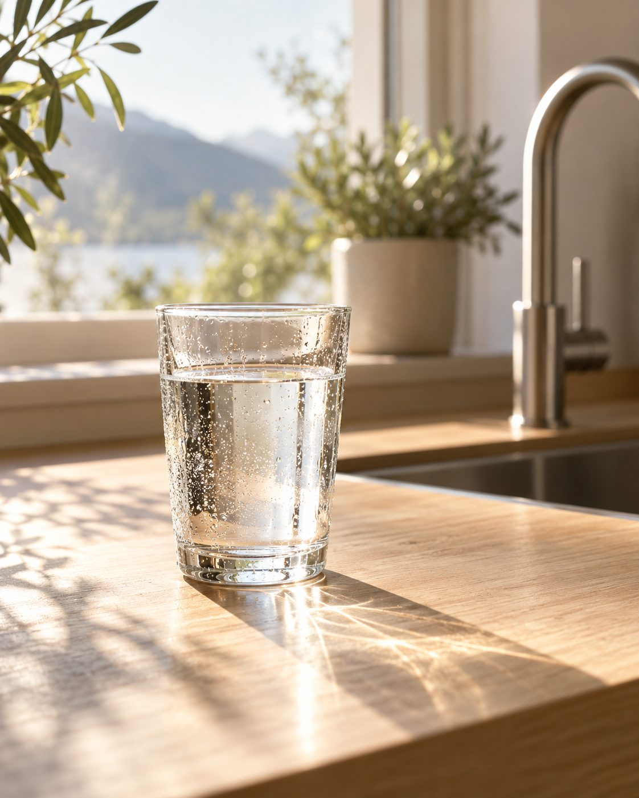
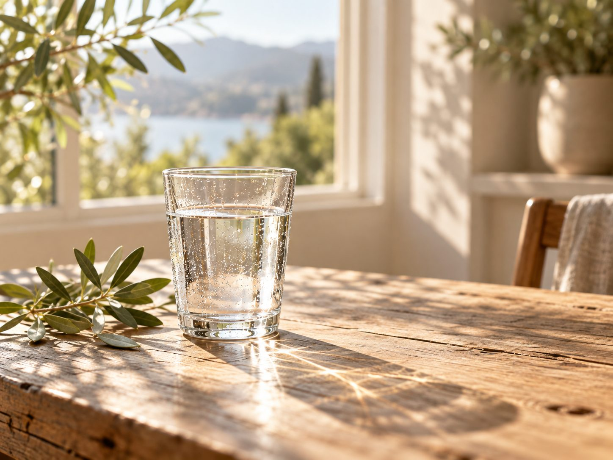
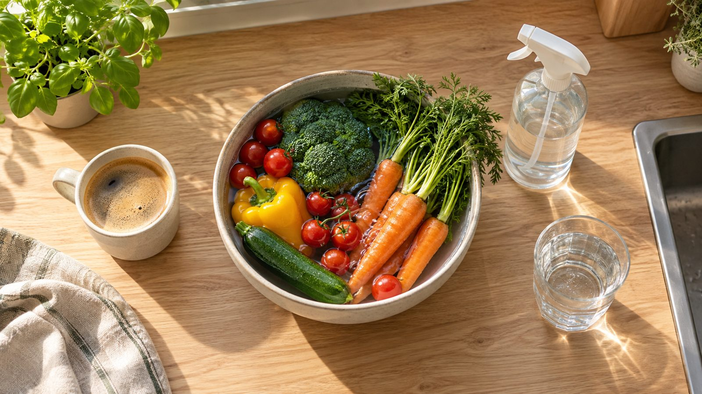

01
Trinken
Keine Kisten mehr schleppen. Du füllst dein Glas oder deine Flasche direkt am Hahn und nimmst sie mit.
Der LeveLuk K8 macht aus deinem Leitungswasser fünf verschiedene Wasserarten: zum Trinken, Kochen, für Pflege und Haushalt. Teste ihn kostenlos bei dir zu Hause.
Gerät kostenlos zu Hause testen Beratung vereinbaren
„Kangen“ heißt auf Japanisch sinngemäß Rückkehr zum Ursprung. Kangenwasser ist das Wasser, das ein Wasserionisierer wie der K8 aus deinem Leitungswasser macht. Der K8 kommt aus Japan.
Im K8 steckt ein Filter. Danach beginnt erst die eigentliche Arbeit, die Elektrolyse: Platten aus platinbeschichtetem Titan teilen das Wasser mit Strom in basisches und saures Wasser. So wählst du per Knopfdruck das Wasser, das du gerade brauchst.


Keine Kisten mehr schleppen. Du füllst dein Glas oder deine Flasche direkt am Hahn und nimmst sie mit.

Kaffee, Tee, Suppe oder Nudeln: Du nimmst das Trinkwasser aus demselben Gerät, mit der Taste pH 8,5 bis 9,5 oder pH 7.

Obst und Gemüse waschen, Flächen abwischen, Pflanzen gießen. Das Gerät liefert dafür eigene Wasserarten.
Und ganz nebenbei: weniger Plastikflaschen in Küche, Keller und gelbem Sack.
Der pH-Wert zeigt, wie sauer oder basisch Wasser ist: 7 ist neutral, darunter sauer, darüber basisch. Am Gerät wählst du ihn per Knopfdruck.
Zum Abwischen von Arbeitsflächen, Schneidebrettern, Armaturen, Glas und Spielzeug. Nicht zum Trinken.
Als Gesichtswasser, für die Haare, zum Gießen von Pflanzen und für Schnittblumen.
Gefiltert, ohne Ionisierung. Das Wasser für Babynahrung und zum Einnehmen von Tabletten.
Zum Trinken, für Kaffee, Tee und zum Kochen. Auch für den Wassernapf deiner Haustiere.
Zum Waschen von Obst und Gemüse, gegen Fett in Küche und Dunstabzug, für Flecken in der Wäsche. Nicht zum Trinken.
Du schreibst mir über das Formular, per WhatsApp oder rufst an. Wir finden einen Termin, der dir passt.
Ich zeige dir das Gerät, du probierst das Wasser und stellst alle Fragen, die du hast. Bei dir zu Hause oder per Video.
Du nutzt ein Testgerät eine Weile in deinem Alltag. Das kostet dich nichts, auch keine Kaution. Danach entscheidest du in Ruhe.
{{VORNAME}} {{NACHNAME}} · {{ORT}}
{{UEBER_MICH}}
Über Kangenwasser kursiert viel im Netz. Hier das Wichtigste, nüchtern erklärt.
Was stimmt: Im Gerät steckt ein Filter. Danach teilt die Elektrolyse das Wasser in basisches und saures Wasser. Ein normaler Filter kann das nicht. Deshalb gibt es fünf Wasserarten statt einer.
Was stimmt: Umkehrosmose entfernt fast alles aus dem Wasser, auch die Mineralien. Der K8 filtert und lässt die Mineralien aus deinem Leitungswasser weitgehend drin. Das sind zwei verschiedene Ansätze.
Was stimmt: Diese Begriffe hört man oft, belegt sind sie nicht. Wassermoleküle ordnen sich in Sekundenbruchteilen ständig neu. Messen kannst du dagegen pH-Wert und Redoxwert. Das zeige ich dir gern bei der Vorführung.
Was stimmt: Eiskristalle zeigen, wie Wasser gefriert. Über Wasser im Glas oder im Körper sagen sie nichts aus.
Was stimmt: Nein. Das Gerät stellt gefiltertes und elektrolysiertes Wasser her. Es ist kein Heilmittel. Wer krank ist, gehört zum Arzt.
Den aktuellen Preis nenne ich dir im Gespräch. Du kannst einmal zahlen oder in Raten, mit Anzahlung und monatlicher Rate.
Nein. Du testest, wir sprechen darüber, und dann entscheidest du. Passt es nicht, geht das Testgerät zurück.
Nichts. Keine Gebühr, keine Kaution. Wie lange du testest, sprechen wir zusammen ab.
Etwas Platz neben der Spüle, eine Steckdose in der Nähe und einen Wasserhahn, an den das Gerät angeschlossen wird. Beim Anschließen helfe ich dir.
Den Filter wechselst du je nach Verbrauch etwa einmal im Jahr. Für das stark saure Wasser brauchst du eine Zusatzflüssigkeit. Die Reinigung macht das Gerät selbst.
Nein. Zum Trinken und Kochen sind die Einstellungen pH 7 und pH 8,5 bis 9,5 gedacht. Die anderen Wasserarten sind für Haushalt und Pflege da. Ich zeige dir genau, welche Taste wofür ist.
Ich. Du hast einen festen Ansprechpartner für Lieferung, Anschluss, Filterwechsel und alle Fragen, die später kommen.
Sag kurz, was du dir wünschst. Ich melde mich bei dir.
Lieber direkt? WhatsApp oder {{TELEFON}}